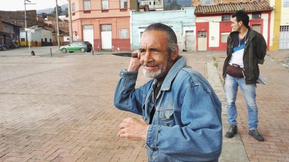

Las Cruces

Nicolas Boone
|
29 min – HD – Spanish B: Nicolas Boone – K: Sofia Oggioni – S: Philippe Rouy – T: Oscar Mendez – P+V: Noodles – Mit Lobsan Adolfo Alonso, Juan Mauricio Alvarez, Sara Gonzalez Website Nicolas Boone
|
Wednesday 17 oct 6.30 pm werkstattkino
Las Cruces is a poor neighborhood of Bogotá. By following some of
these inhabitants, we plunge with them into an intense world where
violence meets hope and joy.
Nicolas Boone comes from the Écoles des beaux-arts in Lyon and Paris. He then directs a number of medium-lenght and short films that will make him known throughout the world. He has been UNDERDOX artist in focus in 2015. LAS CRUCES has premiered at Director's Fortnight at Cannes.
|
| Films Bailu Dream 2013 (10. UX) – Hillbrow 2014 (10. UX) – Psaume 2015 (10. UX) – un autre film comme les autres 2016 – Étage 39 2017 – Las Cruces 2018
|